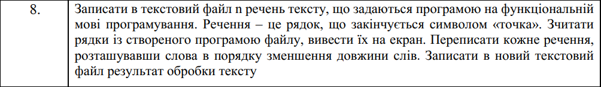
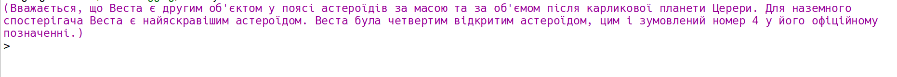
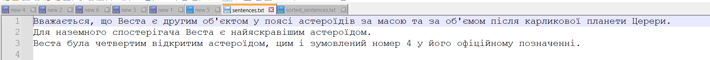
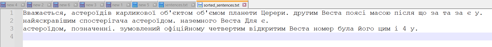

Функціональне програмування
Факультет інформаційних технологій
Кафедра програмних систем та технологій
Лабораторна робота 7
Обробка рядків та файлів мовами функціонального програмування
Примачук Максим Григорович
Група: ІПЗ-44мс
Викладач: Ніколаєнко А.Ю.
2023
Мета
Опанувати теоретичні основи обробки рядків та текстових файлів мовами функціонального програмування та розробити програми їх реалізації
Варіант 8
Хід роботи
Код
Посилання
#lang scheme
(define (write-sentences filename sentences)
(with-output-to-file filename
(lambda ()
(for-each (lambda (sentence)
(display sentence)
(display ".\n"))
sentences))))
(define (read-sentences-from-file filename)
(with-input-from-file filename
(lambda ()
(let loop ((lines '()))
(let ((line (read-line)))
(if (eof-object? line)
(reverse lines)
(loop (cons line lines))))))))
(define (sort-words sentence)
(string-join
(sort (string-split sentence)
(lambda (a b)
(> (string-length a) (string-length b))))
" "))
(define (write-sorted filename sentences)
(with-output-to-file filename
(lambda ()
(for-each (lambda (sentence)
(display (sort-words sentence))
(display ".\n"))
sentences))))
(define sentences '("Вважається, що Веста є другим об'єктом у поясі астероїдів за масою та за об'ємом після карликової планети Церери"
"Для наземного спостерігача Веста є найяскравішим астероїдом"
"Веста була четвертим відкритим астероїдом, цим і зумовлений номер 4 у його офіційному позначенні"))
(write-sentences "E:\\Projects\\Scheme\\Newfolder\\sentences.txt" sentences)
(define read-sentences (read-sentences-from-file "E:\\Projects\\Scheme\\Newfolder\\sentences.txt"))
(display read-sentences)
(write-sorted "E:\\Projects\\Scheme\\Newfolder\\sorted_sentences.txt" read-sentences)
Результат
  Висновок
При виконанні лабораторної роботи створено функції, за допомогою яких здійснюється запис/ читання текстових файлів та сортування слів тексту за кількістю слів.